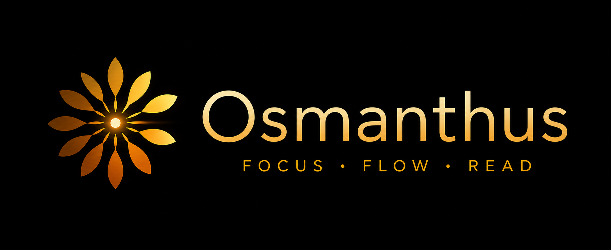

Osmanthus is a native macOS speed-reader for epub files. It uses RSVP and Optimal Recognition Point techniques to help you read at 2–3× your normal pace — without losing comprehension.

Open any epub from your Mac. Osmanthus extracts the text, cover, and table of contents automatically.
Start at your comfortable reading speed and increase by 20 wpm at a time. Most people end up between 400–600 wpm.
Your eyes stay locked on one point. The app handles pacing, pausing at punctuation so nothing feels rushed.
The Optimal Recognition Point letter is highlighted in red and locked to a fixed column — your eye never moves.
60–900 words per minute. Fine-tune with arrow keys mid-session; the setting persists across sessions.
Full chapter navigation with keyboard support. Jump anywhere in the book and undo it with ⌘Z.
Press P to peek at the current and previous paragraphs without losing your place.
Press Z to hide all UI chrome and read in full immersion. Press Z or click to return.
Step back through scrubber drags, TOC jumps, and word skips with ⌘Z.
Search and switch to any book instantly from anywhere in the app.
Track total words read, books finished, average WPM, and total time reading.
Available for macOS Apple Silicon and Intel. MIT licensed.
Unsigned app — on first launch, right-click → Open to bypass Gatekeeper.